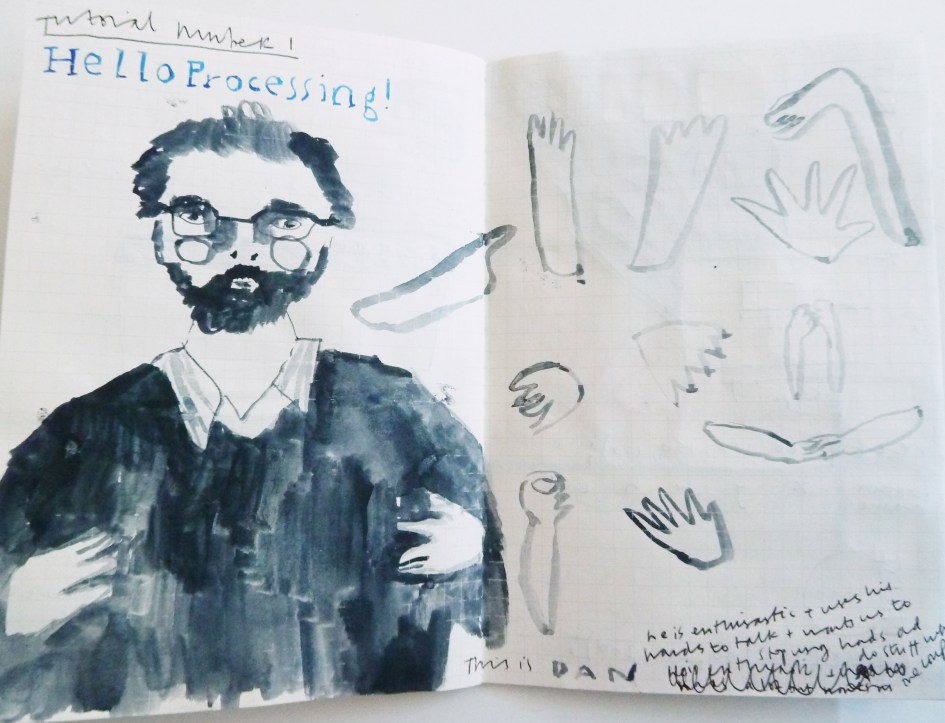

I made a sketch in my notebook every on most days in October with a Pental brush pen, and then I programmed a digital sketch with the drawings using Paolo Pedercini’s p5.play library. The whole process was intentionally quick, and (including the gif creation) it usually took about an hour and a half. I wanted to explore the limitation of time (an hour of making / coding) and space (using one page of a sketchbook / using a specific library in P5) and see what emerged from this. Because of these limitations I made very different things then I had in mind at the start of each session.

You can see the whole collection on the Inktober micro site



Update: these were part of Pixel X Paper exhibition @ Babycastle